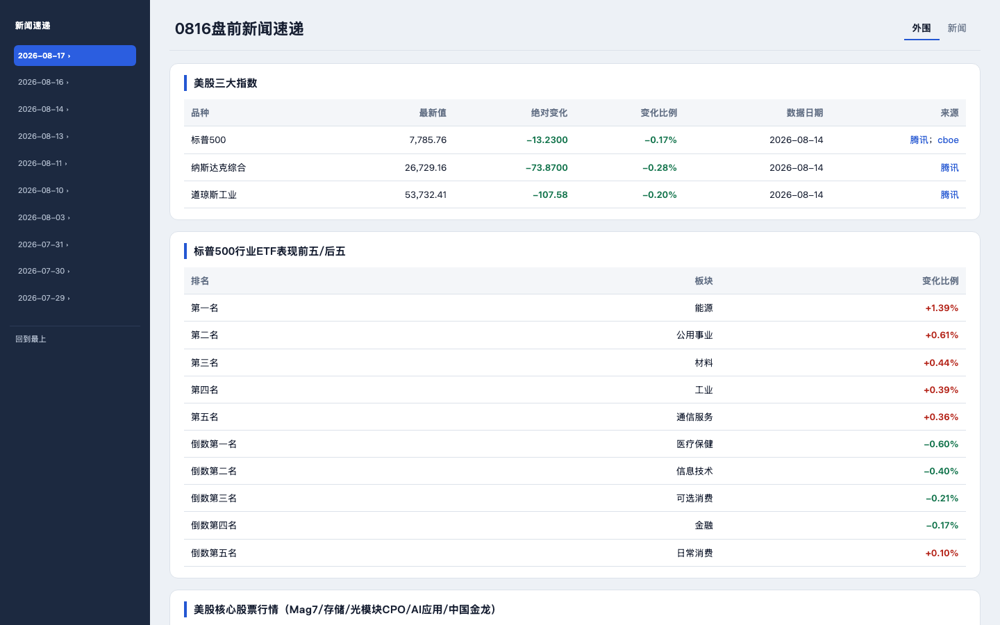
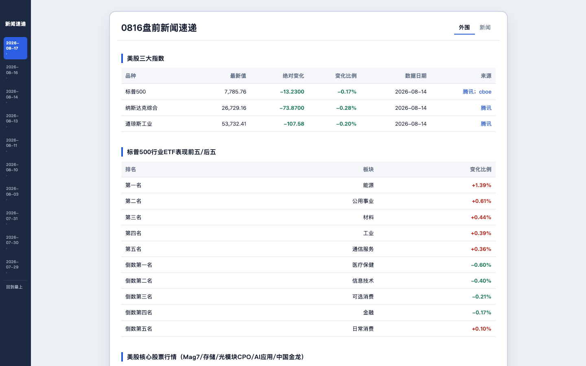

布局方案对比 （两种目录与正文比例）

方案 A · 撑满 100%（目录 15%） — Sidebar 占视口左侧 15%（1440px 视口下 216px），正文撑满右 85%（1224px）。日期列表单行展示 `2026-08-17 ›`，宽屏信息密度高。适合数据型阅读。

方案 B · 之前样式（居中卡片） — Sidebar 76px 固定窄条在左缘，正文卡片 max-width 980px 居中，左右两侧浅色画布。日期列表多行展示 `2026-08-17`+`›`，行长可控、阅读节奏稳。